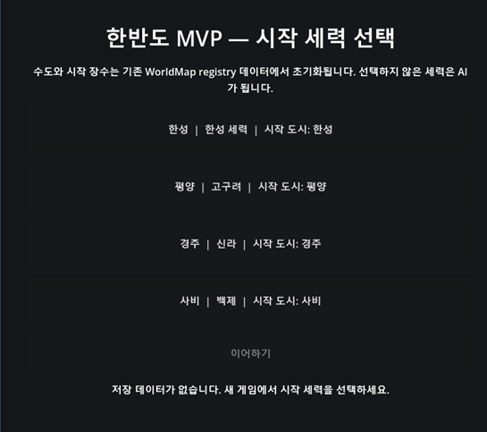

최종 MVP버전을 위한 디테일 작업 시작
한반도 4세력, 첫 플레이 가능한 완결을 향해
2026년 07월 20일리팩토링에서 완성으로
v0.71, v0.72를 거치며 월드맵과 전투엔진 양쪽 다 함수맵을 그리고, 안전한 것부터 조금씩 빼내는 작업을 해왔다. 그런데 이 시점에서 한 가지를 다시 판단해야 했다. 다음 예정된 작업은 v0.72-18 Battle Stage C Boundary Review — 전투 쪽 구조를 더 파고드는 작업이었는데, 여기서 계속 구조만 다듬다 보면 정작 "플레이 가능한 게임"이 되는 시점이 계속 늦어질 수 있었다.
그래서 v0.72-18은 보류하기로 했다. 지금부터는 리팩토링 자체가 목적이 아니라, 각 시스템을 실제 플레이 가능한 MVP 완성 상태로 끌어올리는 단계로 전환한다.
앞으로 EASTWAR는 네 개의 MVP 트랙으로 나눠서 간다.
- 육상전투 MVP — 전투 진입부터 종료까지 한 판이 완성도 있게 진행되는 상태
- 월드맵 MVP — 도시를 보고 선택하고, 국가를 운영하며, 전쟁을 시작할 수 있는 상태
- 내정 MVP — 플레이어가 도시와 국가를 성장시켰다는 체감을 얻는 상태
- 테크트리 MVP — 연구 선택이 국가 성장과 전투·내정에 실제 영향을 주는 상태
이 중 전투가 이미 구현과 QA가 가장 많이 되어 있으니, 육상전투부터 먼저 완성하기로 했다. 방식도 바꿨다. 기존의 "순수 헬퍼 추출"이 이제 기본 작업이 아니다. 앞으로는 기능마다 현재 동작 확인 → MVP 기대 동작 정의 → 차이점 확인 → 최소 구현 → 자동 검증 → 직접 플레이 QA → Complete Lock, 이 순서로 간다. 리팩토링은 기능 구현이 정말 불가능할 정도로 얽혀 있을 때만 예외적으로 한다.
판단 기준도 하나로 정리했다. 기능이 존재하는가가 아니라, 플레이어가 처음부터 끝까지 사용해도 막히지 않고, 결과를 이해할 수 있으며, 다음 선택으로 이어지는가.
v0.73-01 — 육상전투 MVP 감사, 그리고 첫 정정
첫 작업은 코드를 고치는 게 아니라 육상전투에 뭐가 빠져 있는지 전부 목록화하는 것이었다. 전투 진입 화면, HUD, 명령 UX, 컷인, 고유 스킬, 장수별 밸런스, 협동 공격, AI, 증원, 결과 화면, 월드맵 복귀까지 전 범위를 감사하고 P0(진행 불가)/P1(MVP 필수)/P2(연출·편의)/P3(고급 디테일)/Post-MVP로 나눴다.
이 과정에서 문서 자체의 오류도 하나 잡았다. 원래 계획 문서에 TEST_BATTLE_ROSTER 한국 5명·중국 5명을 육상전투 MVP 전체 장수로 잘못 서술한 부분이 있었는데, 이 10명은 어디까지나 테스트용 sample roster였고 실제 육상전투 MVP 장수 범위는 월드맵 한·중·일 전 지역에 배치된 전체 장수라는 걸 확인해서 hotfix로 정정했다.
육상전투 MVP도 단순 UI 마감이 아니라 전투 콘텐츠 자체의 1차 완성판으로 범위를 넓혔다. 장수 선택 → 능력치·병종 차이 → 고유 스킬 → 컷인 → 공격 방식 → 협동 공격 조건 → 전투 기여도, 이 흐름이 장수마다 다르게 느껴져야 진짜 콘텐츠가 된다는 게 핵심 기준이다.
v0.74-00 — 문서 구조 먼저 정리
전투 MVP 디테일 작업에 들어가기 전에, 지난 글(#025)에서 정리한 문서 체계 전환을 실제로 적용했다. 세밀한 패치·헬퍼·버전별 문서를 계속 쌓는 방식에서, 사용자 행동 하나를 처음부터 끝까지 완결하는 트랜잭션 중심 개발로 전환했다. 이번 작업은 런타임 코드는 건드리지 않고 문서 구조만 먼저 확립하는 Documentation Transaction이었다.
T01 — 한반도 4세력, 진짜 새 게임을 만들다
지금까지는 한성 고정으로만 플레이할 수 있었다. T01은 이걸 풀어서 한성·평양·경주·사비 네 세력 중 하나를 골라 시작하는 전체 흐름을 완결하는 트랜잭션이다.

완료 기준은 짧지만 까다로웠다. 게임 실행 → 시작 세력 선택 화면 → 하나 선택 → 선택 세력은 플레이어, 나머지 셋은 AI로 확정 → 해당 국가의 수도·도시·장수·자원·연구 상태 초기화 → 월드맵 진입 → 좌우 패널에 선택 국가/도시 정보 표시 → 선택 국가 장수만 명령 가능 → 첫 턴 정상 시작 → 저장 → 재실행 시 동일 상태 복원. 한성만 정상이고 나머지 세 세력이 부분적으로 깨지는 상태는 완료로 치지 않기로 했다.
T02 — 원정을 떠나 점령까지
T02는 그다음 단계다. 장수를 뽑고, 병력을 정하고, 금·식량·소금을 원정군에 실어서, Battle_Land에서 최대 30턴 동안 싸우고, 승패에 따라 장수·병력·자원을 정산하고, 저장 후 복원까지 되는 전체 흐름을 한 번에 완결하는 트랜잭션이다.
이 과정에서 hotfix가 여섯 번 붙었다.
- hotfix1: 전장 보급 패널이 너무 커서 화면을 가리는 문제 — 우측 하단 자동전투/턴종료/후퇴 버튼 위 여백에 전용 패널로 재배치
- hotfix2: 보급 패널 크기 축소 + 적군 보급 수치의 데이터 신뢰성 확보 + 상단 제목에 남아있던 "전투 테스트", "한성 군", "낙양" 같은 하드코딩 문자열을 실제 상황에 맞게 동적으로 바꿈
- hotfix3: GDScript 경고 메시지 정리
- hotfix4: 승리 시 점령 정산을 하나의 원자적 처리로 완결 — 공격 장수·생존병 점령지 잔류, 부상병 치료 대기, 패배한 적 장수 귀속 또는 인접 도시 피신, 점령 도시의 완전한 통치 편입, 자원·생산·병력 집계 갱신, 세력 멸망 판정까지
- hotfix5: hotfix4가 자동 테스트는 통과했는데 실제 F5 플레이에서 다른 결과가 나온 걸 잡아낸 케이스. 새 게임 시작 직후 국가 창고가 전부 0으로 보이는데 연구는 시작할 수 있고, 출정 화면엔 자원이 있고, 한 턴 지나면 갑자기 창고에 자원이 생기고, 승리해도 점령지에 장수가 안 남는 문제였다. 원인은 자원의 단일 원본(source of truth)이 명확하지 않았던 것 — 국가 창고를 플레이어 소유 도시들의 resource_stock 실시간 합산으로 통일하고, 국가 연구는 수도 우선으로 전체 도시에서 분산 차감, 도시 연구와 침공은 각각 해당 도시/출발 도시 자원만 쓰는 걸로 정리했다
- hotfix6: 남은 GDScript 경고 마지막 정리
T02 완료 시점 기준: 금·식량·소금 적재와 턴별 소비, 식량 고갈 시 이탈, 소금 고갈 시 식량 소비 증가, 최대 전투 30턴, 정상병/부상병/사망병/이탈병 분리, 일반 치료 3개월·집중 치료 1개월, 승리 시 잔류·패배 시 물자 전량 상실, 적 장수 삭제 금지(귀속 또는 피신), 점령 도시 완전 편입과 다음 턴부터 생산 반영, 세력 멸망 판정, 저장·복원, 보급 HUD 정리, 경고 제거, F5 수동 QA까지 전부 PASS.
후속으로 넘긴 것도 명확히 해뒀다. 장수 관리·등용·충성도 시스템은 FUTURE_GENERAL_MANAGEMENT_RECRUITMENT_LOYALTY.md에 별도 문서화하고 이번 범위에선 빼뒀다 — 개인 충성도, 귀속 장수 초기 충성도, 포상·관직·배신·도주·회유·등용, 감옥·포로·재야 연동까지 나중 트랜잭션 몫이다.
앞으로
리팩토링 축에서 MVP 완성 축으로 확실히 넘어왔다. T01, T02가 끝났으니 다음은 육상전투 쪽 남은 디테일(v0.73-02 이후 — 전투 진입 화면 최종 레이아웃, HUD 완성, 명령 UX, 컷인, 결과 화면 등)과 T03 이후 트랜잭션(적 침공·방어)이 이어질 차례다.